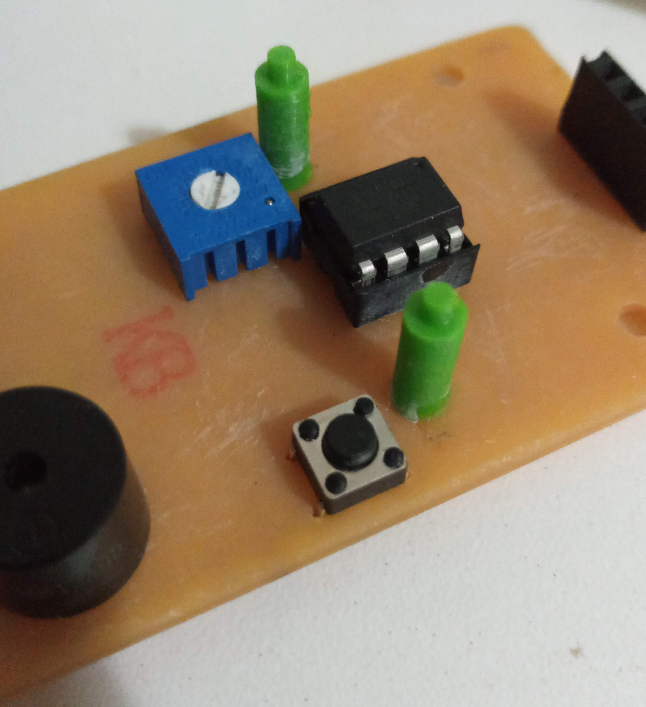

Final Project Time
Alright its time for final project again, and this will mean we gotta go make something with what we learnt in this module.
Already from the start I have a project idea, it is going to be the same thing as the previous module, but better, it is going to be a game console again, but now with a different game and it is smaller, so it is a lot more portable.
The game I am going to be making would be space invaders, the reason why I want this game is because space invaders is another fun little game I want to make a game console of, and it is easier to play than tetris.
The game's brains is going to be the Attiny85, it has enough pins for the game, and it is way smaller, in my previous project I used an Arduino nano, which is pretty big and lots of the IO is not used.
The entire thing is going to be in an enclosure that is going to be made by a mold, we are going to use the Stepcraft machine to cut out the mold, then we are going to cast it.
This entire thing fulfills the requirements for the final project marking, where you will need to demonstrate subtractive cutting, and some programming.
The things we need to do are:
- design a PCB and mill it.
- propgram the Attiny85 and solder the components onto the board and test it.
- design an enclosure and mill it out.
- cast the enclosure and complete the project.
- give final project a test before submitting.
Should be easy enough and able to finish everything on time if we don't slack off :p.
The inspiration of this project came from when I was doing my research during the making of my previous project, where I discovered many different game consoles you can make with Arduino and some components, and in that research, I camed upon the Attiny85, and saw lots of projects you can do with it and the fact that it is essentially, an even smaller Arduino for those projects that don't need the whole board.
Then I came upon this video where they show you how they made a game console with the Attiny.
And that is all about the inspiration, now we can get onto the project.
First for the game console, I need to plan out the things we need to do and create, the first thing is to gather the components and test out how the game is going to be play.
The components we need are: Attiny85 IC SSD1306 display screen with I2C interface push button 10K potentiometer resistor (10k) coin cell battery (2032) buzzer coin cell battery holder Female pin header
Other miscellanious stuff include IC holders, copper board for PCB.
First we need to design the PCB in EAGLES, I realised that there isnt some components are not available in the default library, so I need to download some libraries before we deisign, I installed 2 libraries, one for the coin cell battery holder, the other is the bourns potentiometer library.
After installing them, we can start deisgning the board, first we did the schematic, then convert it to board and we can start to place the components.
Just like how I deisgned my hello board, I converted it to board and start to place the components.
Now I can start to generate the gcode and cut the board.
For cutting the board, I will be using 0.4mm for the traces, 0.9 for the holes, and 0.8 for the outline. Iwill need to change the collar before being able to put the 0.4mm bit there.
After cutting, this is how the board look like, the holes did not cut all the way through so I need to use a pin vise to drill through.

Now we can start to solder the parts, and then we can start to attach the components and IC.

Now we need to program the attiny85, I use this page for the tutorial on how to wire everything up:attiny85 tutorial
For the IC, I will be using arduino as an ISP programmer to program it. first under examples, I need to upload the artduinoisp code, then I need to wire up the arduino and the attiny85. remember to set arduino as ISP before uploaing the code onto the attiny.
Then I need to burn the bootloader so it can run on 8MHz instead of the default 1MHz, just click on burn bootloader.

After burning the bootloader is finished, I upload the code.
Now you should be able to put the attiny85 chip into the board and use a coin cell battery to power it, plug in the screen and there you have it.
Now you can see a demo of how it looks like.
Now I gonna go 3d print the buttons and knob for the potentiometer and button, as well as the holder for the display screen to hold it upright.
After 3D printing I will need to start to cnc the enclosure for it, I designed the enclosure and generated the toolpath for it. And I proceed to cut it. The reason why I decided to CNC was because I prefer the look of it, and with the parts being so small, I wouldn't want to risk the parts getting so burnt, so I CNC so I can keep all in it's wood colour
After cutting, as always, the cnc parts are always a but furry, so I need to sand them down.
To assemble the product, I first glued the supports for the screen, after that was dried, I attacfh the screen on, then I screw on the screws, standoffs and the PCB and then fitted the pieces all in.
Product is finally finished and now I can show a demo of how this product works
youtube video here
Somethings that can be improved on and challenges faced:
- One thing I can improve on for my PCB is to add a on/off switch, this way I won't have to remove the battery every time I off it and I could just flip a switch.
- Probably i need to think about an outer enclosure earlier or at least not so late so I can immediaely just go cut it.
- One challenge I faced is trying to design the PCB as small and compact as possible, as the PCB provided is not that big, trying to fit every thing in is a bit of a challenge to route the traces.
- Another challenge is the failures I have for my PCB, lots of my PCB have different issues i.e. not cutting through, didn't zero properly, some components placed wrongly. And from all these I will need to learn and quickly fix.
- During my playtesting, I realised sometimes the whole thing did not work properly, and as such I need to check everything and see if it is ok. For example, one time it keeps restarting itself or the screen was super dim, and I will need to go fix all these issues, was to just change the coin batery.

In the end I managed to finish it and this module has come to an end. Now for the last module to get that cert.